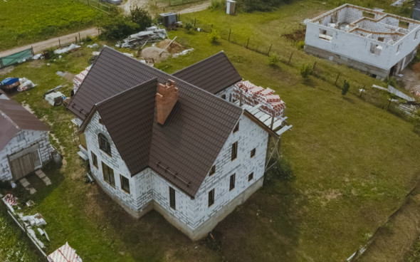
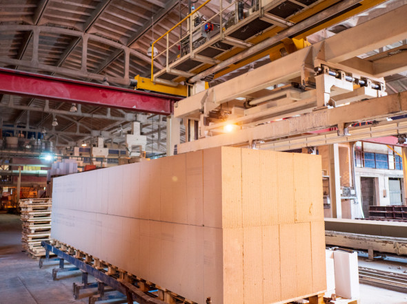
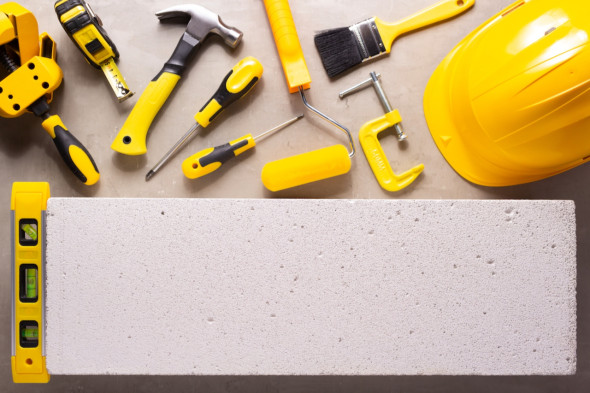

Дом из газобетона: что важно знать до начала строительства
Чем автоклавный газобетон отличается от неавтоклавного? Нужно ли облицовывать дом из газобетона? Как избежать
трещин при строительстве? Ответы на эти и другие вопросы читайте в нашем материале.

Что такое газобетон
Газобетон (ячеистый бетон) сегодня считается одним из самых популярных строительных материалов, которые
используют на рынке загородного жилья. Первый патент на технологию получения бетона, который делал пористым
выделяющийся при взаимодействии добавленных в раствор веществ газ, получил в 1889 году чешский изобретатель
Гоффман. Но газобетон, который популярен сейчас во всем мире, был изобретен позже — в 1922 году шведским
архитектором Акселем Эрикссоном. А шведский бренд Ytong («Итонг») стал родоначальником промышленного
производства автоклавного газобетона.
Газобетон — это материал, который состоит из песка, цемента, извести и воды. В процессе изготовления все
компоненты смешиваются в необходимых пропорциях, формы со смесью отправляются в камеру созревания, где
материал
обретает первоначальную прочность. «Далее происходит разрезание массива на высокоточной линии резки, и он
отправляется в автоклав на 12 часов (проще говоря, печь с высоким давлением). Именно там газобетон обретает
свои конечные характеристики, становясь искусственным каменным минералом», — отметил эксперт.
Газобетон — разновидность ячеистого бетона, изготавливаемая с применением газообразователей. Свою
прочность
он набирает в автоклаве под воздействием высокого давления и парообработки. По способу порообразования
ячеистые
бетоны делятся на пенобетоны и газобетоны. В одном материале для создания ячеистой структуры применяется
химическая пена, а в другом — газ.

Преимущества газобетона
- Газобетон полностью отвечает ключевым характеристикам современного загородного строительства:
энергоэффективность, безопасность, экологичность.
- Максимальной энергоэффективности газобетона мы добиваемся, используя утепленную плиту фундамента. Сам
газобетон обладает низкой теплопроводностью (при плотности D400 и ниже), в сочетании с утепленной плитой
фундамента жители дома смогут не только существенно сэкономить на отоплении, но и полностью отказаться от
радиаторов. При этом газобетон пористый, «дышащий» материал, даже в жару в таком доме будет свежий воздух,
не
будет скапливаться влага, появляться грибок и плесень.
- Геометрически правильный газобетон позволяет возводить стены с минимальными отклонениями. А это
положительно
сказывается на отделке, как внутренней, так и внешней.
- Еще одно немаловажное свойство газобетона в загородных домах — его устойчивость к возгоранию.
- В плане экологичности газобетон также одна из лучших опций. У него чистый состав, низкий радиоактивный фон,
он
не выделяет опасных веществ при горении, а продукты распада не наносят вред экологии.
Autoclaved and non-autoclaved aerated concrete is made from the same basic components, but the first one is
processed in a special oven - an autoclave. As a result, an analogue of the natural mineral tobermorite is
formed in aerated concrete. The main advantage of such aerated concrete is strength and reliability. The
higher
the percentage of tobermorite in aerated concrete, the stronger this building material.
Non-autoclaved aerated concrete cannot be autoclaved. As a rule, the mixture is left to harden under normal
conditions. This method is cheaper because you do not need to use special equipment. But non-autoclaved
aerated
concrete is inferior to autoclaved in strength.

Особенности строительства дома из газобетона
Перед строительством дома из газобетона, как и любого другого, нужно подготовить проект и изучить особенности
работы с материалом. Крупные производители газобетона часто проводят мастер-классы по строительству и выпускают
специальные инструкции.
Фундамент и облицовка
Газобетон (газоблоки) является крупноформатным строительным материалом, которому требуется устойчивый
фундамент.
Эксперты рекомендуют строить дом из газоблоков на монолитном ленточном фундаменте или плите. Из самого
газобетона
строится каркас дома. Внешняя отделка дома может быть любой. Например, его можно оштукатурить, облицевать
кирпичом, искусственным камнем или брусом. Утеплять дом необязательно, если использовать блок плотностью 400
кг/м3
(D400) и толщиной 400 мм.
Работа каменщика
Нужно заранее решить, какими будут перекрытия и кровля в доме — от этого зависят технические решения, которые
проектировщик заложит в узлы стен. Например, монолитные
перекрытия позволят не использовать перемычки для больших окон, что удешевит строительство.
Внутренняя отделка
К внутренней отделке рекомендуется приступать через полгода, чтобы основная часть влаги выветрилась. Нужно
обеспечить удаление из кладки начальной технологической влаги, поэтому лучше стены не штукатурить в первый год.
Но
если к выбору штукатурного состава подойти ответственно — воспользоваться специализированными составами и
системами, предназначенными для отделки, то можно штукатурить сразу.
Плюсы дома из газобетона
Дома из газобетона хорошо держат тепло. Летом такой дом, наоборот, быстрее охлаждается. Дом из газоблоков
можно
отнести к быстровозводимым строениям по сравнению с кирпичным за счет более крупных размеров материала.
Газобетон имеет достаточно ровную поверхность. Если стройка велась аккуратно и качественно, для последующего
оштукатуривания стены потребуется небольшой слой штукатурки.
Еще одно преимущество — огнестойкость. Газоблоки огнестойки и способны выдержать воздействие огня в течение
двух-трех часов, не теряя при этом несущих способностей. Дом из газоблоков, в отличие от деревянного, не
подвержен воздействию грибка, не является пищей для грызунов и насекомых. Прослужить такой дом может 70 лет.
Недостатки дома из газобетона
Одна из распространенных претензий к домам из газобетона — появление трещин в стенах и разрушение на
морозах.
Обычно это связано с неправильным использованием стройматериала. Например, когда его привозят на
стройплощадку
с излишним набором влаги и начинают строит, не дав высохнуть.
К минусам можно отнести и более слабую звукоизоляцию межкомнатных стен по сравнению с бетоном, кирпичом и
многослойными каркасными конструкциями. Это связано с низкой плотностью и массой самого материала. Строить
из
газобетона не рекомендуется в сейсмоопасных районах.